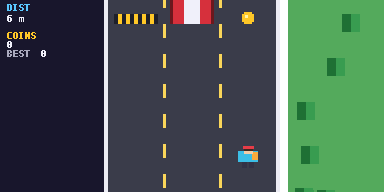
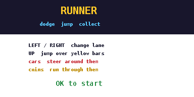
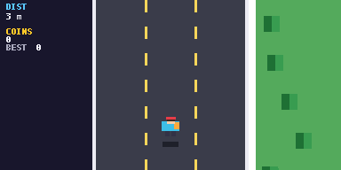

Lane runner
runner
Run down a three-lane road. Switch lanes to dodge cars, jump yellow bars and grab coins. It speeds up as you go.
runner.py7.4 KB261 lines
Performance: may lagLag warning. The road, trees and cars all move every frame, so this runs slower than most games here. It can still stutter on busy stretches.
Controls
| Left / Right | Switch lane |
| Up | Jump over yellow bars |
| OK | Start and retry |
| AC | Instant termination |
| Quit | SETTINGS or BACK |
How to run it
- Download
runner.pyorrunner.zip. Pick one: the .py is the quickest route. - If you downloaded the
.zip, unzip it and take the Python file out of it. If you downloaded the.py, skip this step. - Connect your calculator via a USB-C cable.
- Select 'USB Flash'.
- Place the Python file alongside the
@MainMemoryfolder (NOT inside of it, ignore theCaptfolder if it's present). - Eject the USB-C attached to the calculator.
- Open the Python module on the calculator.
- Press on Tools.
- Select File.
- Select Open.
- Open the game file.
- Press the right arrow with line-in-front button on your calculator (next to the up button).
- Wait for your game to load.
- Enjoy.
If your browser or school blocks .py downloads, use the zip instead. If the calculator says Invalid Data Size, the file was changed on the way over. Download it again and copy the new copy.